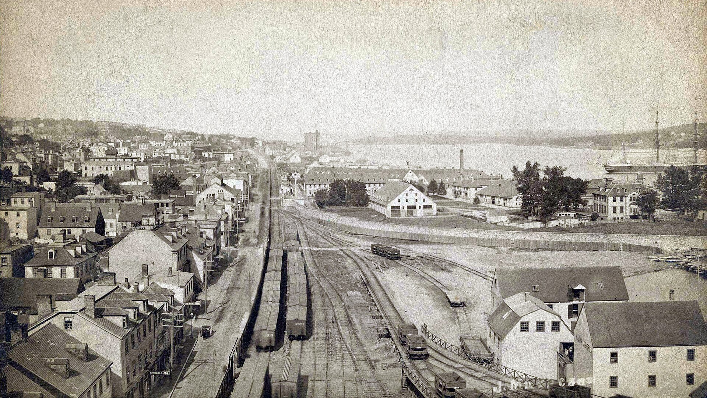

Chapter 5
The Harbour's Approaches
The darkness above the Narrows held its stillness. Richmond’s chimneys were cold, the Naval College’s windows dark, the streets empty of everything but the ordinary trouble of a December night. Below, on the water, the gate vessel maintained her watch. HMS Highflyer lay at the anti-submarine nets, her crew alert to the approaches where the submarine war had redrawn every condition of entry.
The nets themselves were a fabrication of wire and wood, lowered each dawn to release the day’s traffic, raised each dusk to seal the port against the U-boats that had turned the Western Approaches into a shipping graveyard. The gate vessel’s function was recognition: identify, signal, permit or deny. She did not govern what occurred inside the harbour. That authority belonged to others, and the boundary between them was exact, invisible to anyone who had not absorbed it through years of wartime routine.
Late on 5 December, the French steamer Mont-Blanc arrived off these approaches under the command of Aimé Le Medec. The vessel was fully loaded with the explosives trinitrotoluene (TNT) and picric acid, the highly flammable fuel benzol, and guncotton. She intended to join a slow convoy gathering in Bedford Basin readying to depart for Europe but was too late to enter the harbour before the nets were raised. Ships carrying dangerous cargo were not allowed into the harbour before the war, but the risks posed by German submarines had resulted in a relaxation of regulations. The cargo represented months of procurement across North American ports, a concentration of destructive chemistry that the shipping papers described in the flat vocabulary of commerce: weights, measures, destinations, consignees. The hazard itself travelled under the concealment of documentation, apparent to those who understood how to read it, concealed from those who did not.
The examination anchorage lay three miles outside the gate, a stretch of water where incoming ships were halted and inspected before receiving authorization to proceed. The submarine war had transformed Halifax into this: a protocol that converted the harbour’s natural advantage into a governed bottleneck. The examination service—naval officers, boarding parties, signal flags—operated under Admiralty direction, but its determinations shaped the harbour master’s subsequent actions. A vessel cleared here would advance to the next stage of the process. A vessel detained here would wait, accumulating delay against the schedules of convoy assembly.
Mont-Blanc was stopped. The examination officer came aboard, examined the papers, noted the cargo in terms that satisfied his instructions. The ship was not refused entry. But the hour was late, the nets were closed for the night, and the harbour’s internal regulations prohibited movement in darkness. The French vessel was directed to the examination anchorage to await morning, her engines quieted, her crew standing watches in the December cold.
The rule that held her, no entry after dark, had been forged in the same wartime logic that filled her holds. A submarine could not strike what it could not locate; a ship that navigated the Narrows by night risked collision, grounding, the obstruction of a channel on which the entire convoy apparatus depended. The examination anchorage was the release mechanism in this arrangement, a location where the accumulation of incoming traffic could pool without disturbing the harbour’s internal operations.
But the queue was not neutral. A ship held at the anchorage became a datum in the harbour master’s morning computations, a vessel whose pilotage requirements, berth assignment, and convoy connection had to be reconciled with every other demand on the port’s capacity. And capacity, in December 1917, was drawn tight across competing imperatives: the slow convoy assembling in Bedford Basin, the urgent sailings of relief vessels, the continuous traffic of coal and supplies that sustained the naval base and the city beyond it.
The harbour master’s office, in the dockyard building on the Halifax shore, maintained the log that converted these pressures into sequence. When a master disputed a pilot’s judgment about entering against the tide, the log preserved only the hour of passage. When naval command displaced the harbour master’s berth assignment, the log registered the revised berth while omitting the dockyard telephone call that produced it. The clerk’s instrument converted contingency into order, producing a document that seemed to portray a harbour under coherent management even as the waters beyond churned with competing requirements.
On the evening of 5 December, the log accumulated its entries. Mont-Blanc, held at the examination anchorage, was noted for morning pilotage. The pilotage assignment itself belonged to a separate authority, the Halifax Pilotage Commission, whose pilots were sworn to the harbour’s navigation and compensated by the ship. The commission maintained its own schedule, its own pool of available men, its own understanding of which vessels required which competencies. A munitions ship of Mont-Blanc’s tonnage would need a pilot of corresponding seniority; the morning’s assignments would require adjustment to supply one.
This adjustment was routine. The pilotage system had developed through decades of local practice, codified in regulations that specified how pilots were assigned, how fees were calculated, how disputes between master and pilot were settled. What it did not specify—what no regulation in Halifax had yet attempted to specify—was how the movements of incoming and outgoing traffic should be sequenced to prevent their convergence in the Narrows. That coordination was left to the individual judgments of pilots, masters, and the harbour master’s office, operating in the assumption that professional competence and the Rules of the Road would suffice.
The Rules of the Road were themselves a product of maritime custom, formalized in international convention but applied locally through habit and interpretation. They specified that vessels should pass port to port, keeping to starboard in narrow channels. They specified speed limits—five knots within the harbour—designed to permit stopping distance and maneuvering room. They assumed a channel wide enough for two ships to pass, a visibility adequate for early recognition, a margin of error that the Narrows, in places, did not afford.
But the Rules did not govern timing. They did not state that an outbound ship should wait for an inbound convoy to clear, or that an inbound munitions vessel should be held until the channel was empty of opposing traffic. These were operational decisions, distributed across authorities whose jurisdictions overlapped without coinciding. The naval command governed the examination anchorage and the gate vessels. The harbour master governed berth assignments and the internal movements of shipping. The pilotage commission governed the men who would actually con the vessels through the channel. No single node in this system possessed comprehensive knowledge of all movements planned for the morning, and no mechanism existed to compel the sharing of such knowledge.
In Bedford Basin, the Norwegian relief ship Imo had already cleared these obstacles. She had entered the harbour days before, discharged her cargo of food and supplies for the Belgian Relief Commission, and applied for clearance to sail. The guard ship HMCS Acadia had signalled her permission to depart at about 7: 30 a. m. On the morning of 6 December, with Pilot William Hayes aboard. Her destination was New York, to load additional relief cargo for the starving populations of occupied Europe. Her master’s urgency was personal and institutional: the relief commission’s schedules were measured against starvation, and each day’s delay meant tons of grain that would not arrive, mouths that would not be fed.
Imo’s clearance had been processed through the same distributed system that would handle Mont-Blanc’s entry. The harbour master’s log would record her departure time. The pilotage commission had assigned Hayes, a man with years of experience in the port. The naval command, through Acadia, had confirmed that her passage through the gate was authorized. What none of these nodes had accomplished—what the system’s architecture made difficult to accomplish—was coordinate her outbound movement with Mont-Blanc’s inbound approach to ensure that their paths would not intersect in the narrowest section of the channel.
The tide compounded this structural compression. Halifax Harbour’s currents ran strong through the Narrows, and the window of favorable water for large vessels was restricted. Masters and pilots planned their movements around these hydrological facts, which were known, predictable, and beyond human modification. The morning’s tide would serve both ships: Imo, departing, would ride the ebb toward the sea; Mont-Blanc, entering, would push against it into the basin. But the same tide that enabled their movements also constrained their timing, compressing two large vessels into the same brief interval when the water would permit their passage.
The harbour master’s office, in the early hours of 6 December, processed the accumulation of these pressures. The log would show, in its abbreviated entries, that Mont-Blanc was assigned a pilot for morning entry, that Imo was cleared for departure, that the convoy in Bedford Basin was preparing to sail. It would not show the telephone calls, the habitual assumptions, the unspoken dependence on professional judgment that allowed these movements to be scheduled without explicit coordination. The clerk’s pen moved down the page, each entry seeming to complete a rational sequence while the actual complexity of the morning’s traffic remained distributed across minds and institutions that would not converge until the moment of encounter.
At the examination anchorage, Mont-Blanc’s crew had passed the night in the confined quarters of a vessel built for capacity rather than comfort. The holds below them contained chemistry in its most concentrated form: TNT, stable enough to transport but violent enough to destroy; picric acid, sensitive to shock and contamination; guncotton, the propellant that had transformed naval warfare; benzol, the industrial solvent that vaporized and burned with invisible flame. These materials were stowed according to regulations, separated by dunnage and distance, their cumulative hazard calculated and accepted as the cost of arming the Western Front.
The crew did not conceive of themselves as passengers on a floating bomb. They conceived of convoy schedules, of the North Atlantic passage that awaited them, of the homes in Bordeaux they had left and would return to. The war had normalized the transportation of violence; the extraordinary had become routine. The examination officer’s clearance, the pilot’s expected arrival, the harbour master’s remote permission—these were the frames through which they understood their situation, not the chemistry in the holds below their feet.
Dawn came gradually to the approaches, the winter light accumulating in greys rather than golds. The gate vessel’s crew raised the nets, opening the harbour’s mouth to the day’s traffic. At the examination anchorage, Mont-Blanc’s engines were prepared, her crew called to stations, her master awaiting the pilot who would con her through the channel he had never seen in daylight. The pilot himself, Francis Mackey, was making his way to the vessel by harbour boat, carrying with him the local knowledge that no chart fully captured: the shifting currents, the unmarked shoals, the visual landmarks that guided judgment when instruments failed.
Mackey’s assignment was routine. He had piloted munitions ships before, had learned to manage the particular handling characteristics of vessels loaded deep with dense cargo. He knew the Narrows’ dimensions, knew where the channel constricted to less than half a mile, knew the locations where two large ships could not comfortably pass. What he did not know—what the system’s fragmentation ensured he could not know—was that Imo had already entered the channel from the opposite direction, making speed to recover lost time, her master and pilot operating under their own urgency, their own schedule, their own understanding of the morning’s possibilities.
The harbour master’s log would later record the times of these movements with apparent precision: Imo cleared at 7: 30, entered the Narrows shortly after; Mont-Blanc piloted at 7: 30, entered the Narrows shortly after. The log’s simultaneity was artifact, not coordination. The two ships were not scheduled to meet. They were simply scheduled to move, in the same narrow water, during the same tidal window, under authorities whose jurisdictions touched without merging.
The administrative trigger was not a decision but a default, not a choice but an absence of choice. The wartime system that had created the examination anchorage, the gate vessels, the pilotage assignments, had not created a corresponding capacity to sequence traffic through the harbour’s bottleneck. Security against submarines had been institutionalized; safety against collision had been left to professional judgment operating with partial information. The compression of the morning’s movements—Imo outbound, Mont-Blanc inbound, the convoy assembling in the basin—was the predictable output of this structural gap, as ordinary and as defensible as the rules that produced it.
In the pilot house of Imo, William Hayes could see the channel narrowing ahead, the Dartmouth shore closing on his starboard, the Halifax shore on his port. He knew the speed limit, knew the rule of port-to-port passage, knew the locations where caution was particularly required. He knew his own ship’s handling: the relief vessel was in ballast, light and high in the water, responsive to helm and engine in ways that a loaded ship would not be. What he could not know, what no signal or lookout had yet told him, was that another large vessel was approaching from the opposite direction, in the same channel, under the same assumptions of professional competence and navigational right.
The two pilots, Mackey and Hayes, were men of the same profession, trained to the same standards, subject to the same regulations. They had likely passed each other in the pilot boat, exchanged the greetings of colleagues, perhaps discussed the morning’s traffic in the casual terms of shared expertise. Neither had been given, nor had sought, comprehensive knowledge of the other’s assignment. The system’s architecture did not require it. The harbour master’s log recorded movements, not intentions; the pilotage commission assigned men to ships, not ships to sequences; the naval command controlled the gate, not the channel beyond it.
The Narrows lay ahead of both vessels, a geographical fact that neither could modify. The channel’s narrowest point, between the Devil’s Island light and the Halifax shore, offered less than six hundred yards of navigable water. For ships of Imo’s and Mont-Blanc’s length, this meant that passing required precise coordination: early recognition, clear signals, mutual adjustment of speed and course. The Rules of the Road assumed such coordination was possible. The harbour’s institutional fragmentation made it probable that such coordination would fail.

The morning light was adequate now for visual contact, though the December haze reduced visibility toward the channel’s bends. The industrial smoke of Richmond and Dartmouth mixed with the steam of ships and the damp of the harbour, creating a grey medium through which vessels appeared as shapes before they became details. Recognition must occur in this condition, judgment must form here, and the gap between seeing and understanding must be closed by professional habit and institutional trust.
Imo entered the Narrows well above the harbour’s speed limit, her master and pilot attempting to recover the delay that had accumulated in the basin. The speed was a violation, noted in later inquiries, but it was a violation of a familiar kind: the routine pressure of schedule against regulation, of commercial or humanitarian urgency against procedural caution. The harbour’s enforcement of speed limits was intermittent rather than systematic, dependent on observation and report rather than on any comprehensive monitoring. A ship that moved too fast might be noted, might be reported, might suffer consequences that would arrive long after the moment of choice.
Mont-Blanc, approaching from the opposite direction, was constrained by different pressures. A loaded vessel, pushing against the ebb tide, could not achieve the speeds that Imo’s light condition permitted. Her master and pilot were focused on the channel’s navigation, the currents’ compensation, the gradual approach to the basin where the convoy awaited. The relative speeds of the two vessels—Imo fast and light, Mont-Blanc slow and deep—meant that their encounter, once initiated, would develop rapidly, compressing the time available for recognition and adjustment.
The pilots would later give conflicting accounts of what they saw and when, of which signals were made and which were understood. The inquiry would parse these accounts for evidence of fault, of violation, of professional failure. But the structural condition that made their conflicting perceptions possible—the absence of any authority capable of sequencing their movements, of holding one ship until the other had cleared—would receive less attention. It was easier to judge individual error than institutional design, easier to assign blame to pilots than to acknowledge that the system had made their collision probable before they ever entered the channel.
The gate vessel, having opened the nets, maintained her watch at the harbour’s mouth. Her crew could see Imo departing, Mont-Blanc approaching, but their jurisdiction ended at the nets’ line. They had no authority to signal, to delay, to coordinate. The examination service, having cleared Mont-Blanc the evening before, had no further role in her movement. The harbour master’s office, receiving reports of departures and arrivals, processed them as accomplished facts rather than as elements of a traffic pattern that might require intervention.
The book has called this the split channel: not a physical division but a jurisdictional one, a state in which multiple authorities governed overlapping aspects of the same space without any single authority capable of comprehensive oversight. The naval command, the harbour master, the pilotage commission, the individual masters and pilots—each operated within their assigned sphere, each possessed of partial knowledge and partial power, none capable of seeing or shaping the whole. The wartime emergency that had created this fragmentation—the submarine threat, the convoy imperative, the urgent mobilization of North American industry—had not created corresponding mechanisms to manage its consequences.
The morning advanced. Imo moved down the channel, her speed exceeding the limit, her master and pilot focused on the passage ahead. Mont-Blanc moved up, her engines straining against the tide, her own master and pilot focused on the navigation of an unfamiliar loaded vessel. The two tracks converged toward the narrowest point, the place where the channel’s geography would compel encounter, where professional judgment would be tested against the compression of time and space that the system’s defaults had created.
Richmond’s factories had opened for the day, their workers at machines, their smoke rising to mix with the harbour haze. The Naval College sent its cadets to morning instruction. The railway yards sorted cars for the Intercolonial’s winter traffic. Children walked to school along streets that ran down to the water’s edge, their attention on the ordinary difficulties of December mornings: cold hands, slippery sidewalks, the promise of Christmas approaching. None of this activity was connected to the movements on the water below, to the two large vessels whose paths were narrowing toward intersection.
The harbour’s approaches had completed their function. The examination anchorage had held Mont-Blanc through the night, accumulating her into the morning’s traffic. The gate vessel had opened the nets, admitting her to the channel where Imo already moved. The pilotage commission had assigned men to both vessels without knowledge of their convergence. The harbour master’s log had recorded permissions without sequencing movements. Each node had operated correctly, defensibly, according to its own instructions and assumptions. The encounter that approached was not the product of any single failure but of the system’s ordinary functioning, its routine production of compression and convergence.
At 8: 45 a. m., the two ships would meet in the Narrows, their hulls touching, their futures binding. The twenty minutes that followed—fire on the water, crowds gathering, the chemistry in Mont-Blanc’s holds heating toward detonation—would be measured against this structural origin: not an accident of navigation but an output of administration, the predictable consequence of rules that had been designed for one emergency and had created another. The explosion at 9: 04: 35 would level Richmond and kill nearly two thousand people, but its administrative trigger had already fired, in the ordinary, defensible decisions of the night before and the morning of, when the harbour’s approaches had processed two ships into the same narrow channel without authority to keep them apart.